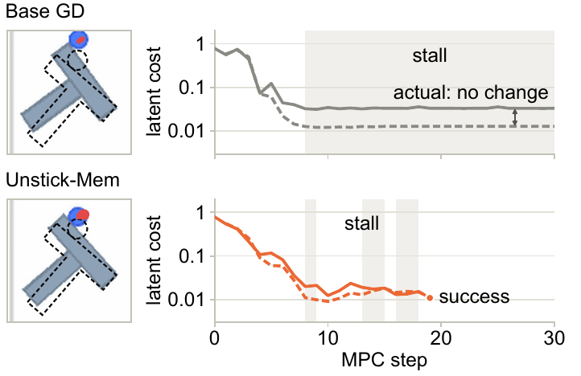

Stuck in Place: Stall Diagnosis and Remedies for JEPA Planners
Seoul National University

Abstract
Joint-embedding predictive architecture (JEPA) world models plan from pixels with model predictive control, yet often fail on tasks their model should handle. Test-time adaptation attributes such failures to model error under distribution shift and updates the weights on the current episode, without checking this attribution against the planning loop itself. We follow the executed planning loop on pushing tasks. In most settings, with and without distribution shift, nearly all failures (at least 96%) are stalls, where the object stays in place while the model predicts progress. The warm-started gradient-descent (GD) planner then returns nearly the same plan, a fixed point where the agent mostly idles. We propose Unstick, which pairs on-policy fine-tuning before deployment with a fixed-weight loop breaker: a residual memory of the episode's prediction errors or random re-initialization at every replan. With GD, Unstick recovers most of the adaptation gain on pushing tasks with the memory, and with re-initialization most of it on shape shifts but much less on visual shifts. A large part of what limits these planners under GD is thus a fixed point of the planning loop, present with and without distribution shift, which a planner with fixed weights can break.
BibTeX
@article{lee2026stuck,
title = {Stuck in Place: Stall Diagnosis and Remedies for {JEPA} Planners},
author = {Lee, Junhyeok and Lee, Dongheon and Choi, Kyu Sung},
journal = {arXiv preprint arXiv:2611.25415},
year = {2026}
}